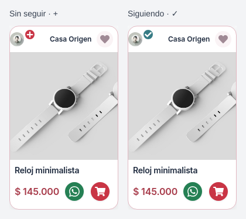
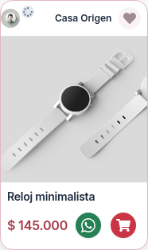
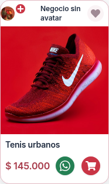
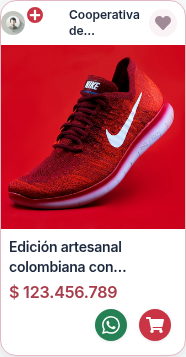
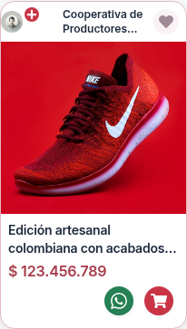
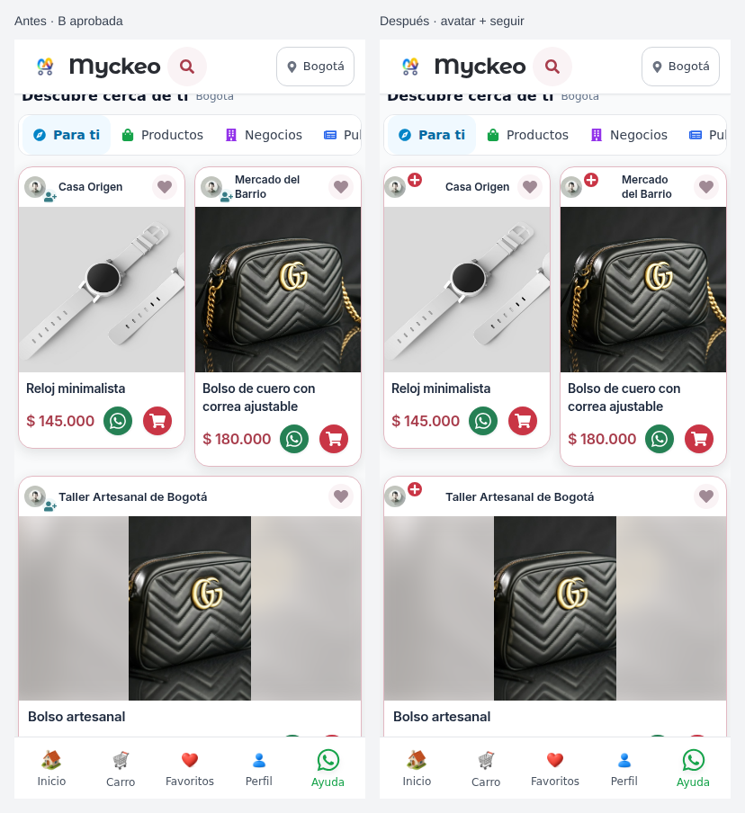
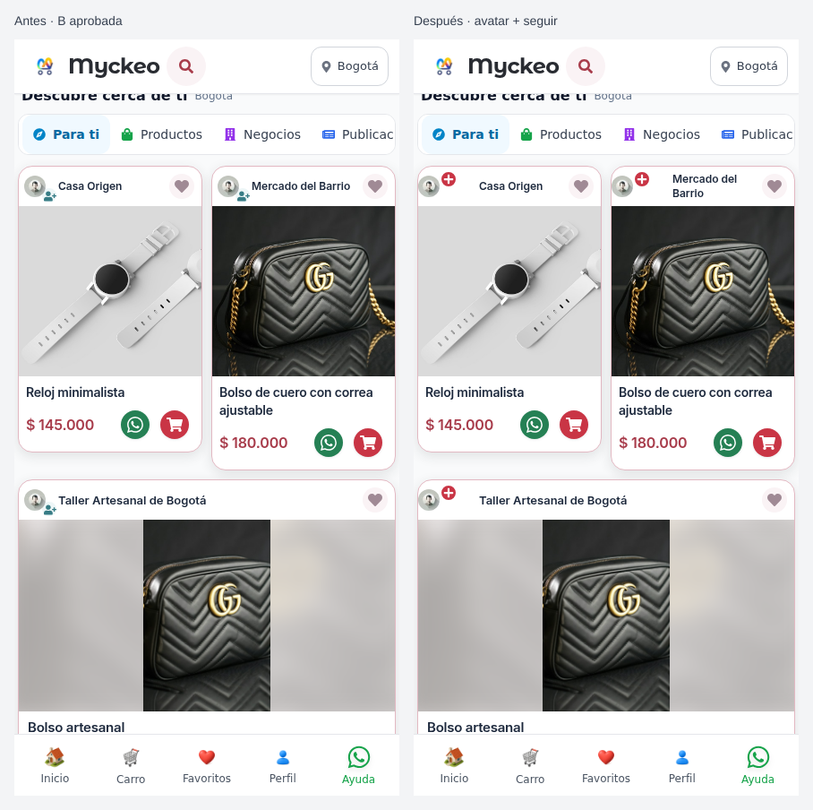
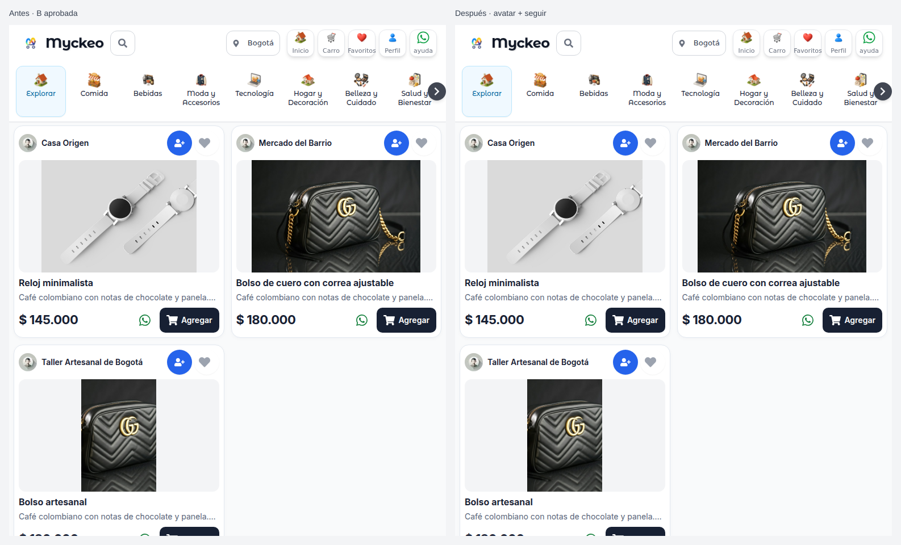
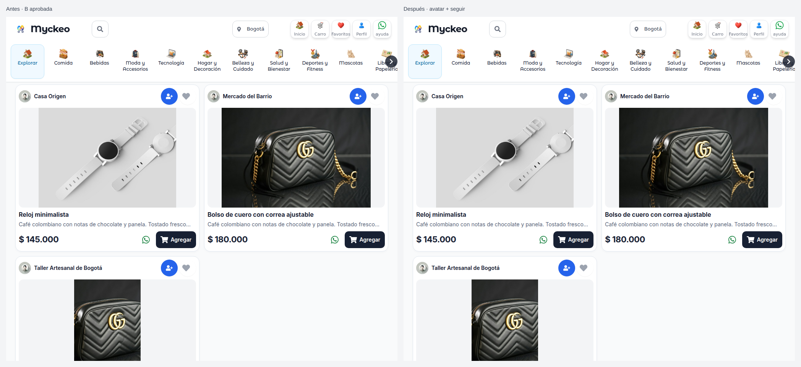

Alternativa compacta accesible: avatar enlazado de 24 × 24 px, Seguir independiente de 44 × 44 px e indicador visible de 16 px con halo blanco. Header de 44 px. Se ceden 24 px de ancho al nombre frente a B para preservar ambos destinos.









Capturas del componente real de Next.js con sesiones, red y datos sintéticos controlados por Playwright. Las composiciones conservan su escala original.